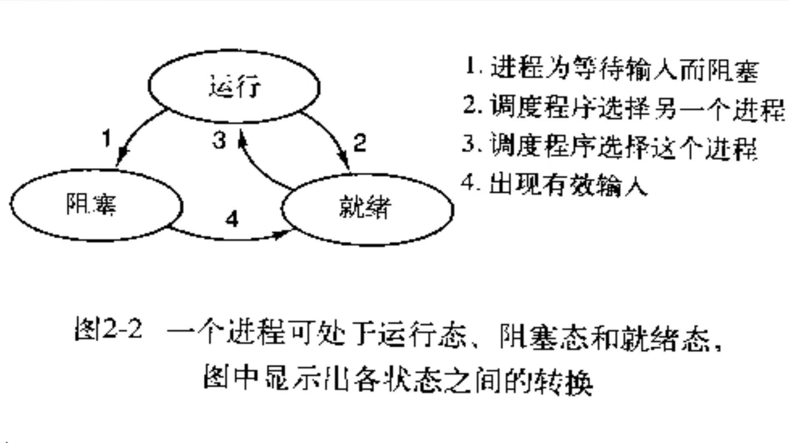

进程
定义:
1 | 在进程模型中，计算机上所有可运行的软件，通常也包括操作系统，被组织成若干顺序进程，简称进程（process）。 |
1 | 狭义定义：进程是正在运行的程序的实例（an instance of a computer program that is being executed）。 |
在iOS系统中，开启一个应用就打开了一个进程。
进程和程序之间的区别:
1 | 进程就是厨师阅读蛋糕食谱，取来各种原料以及烘制蛋糕的一系列动作的总和。 |
创建进程的4个主要事件:
1 | 1. 系统初始化 |
进程的三种状态及转换关系:
1 | 1. 在操作系统发现进程不能继续运行下去，发生转换1 |

线程
定义:
1 | 线程（thread）是操作系统能够进行运算调度的最小单位。它被包含在进程之中， |
在iOS系统中，一个进程包含一个主线程，它的主要任务是处理UI事件，显示和刷新UI。
进程和线程的关系:
1 | 1. 进程是CPU调度和资源分配的基本单位。 |
区别:
1 | 1）地址空间和其它资源（如打开文件）：进程间相互独立，同一进程的各线程间共享。某进程内的线程在其它进程不可见。 |
同步 && 异步
同步
在当前线程中依次执行任务，不开启新的线程。
异步
多个任务情况下，一个任务A正在执行，同时可以执行另一个任务B。任务B不用等待任务A结束才执行。存在多条线程。
并发 && 并行
并发
并发指当多个线程操作时，如果系统只有一个CPU，则它根本不可能真正同时进行一个以上的线程，它只能把CPU运行时间划分成若干个时间段,再将时间段分配给各个线程执行，在一个时间段的线程代码运行时，其它线程处于挂起状。这种方式我们称之为并发(Concurrent)。
并行
并行指当系统有一个以上CPU时，其中一个CPU执行一个线程时，另一个CPU执行另一个线程，两个线程互不抢占CPU资源，可以同时进行，这种方式我们称之为并行(Parallel)。
总结:
并行是指两个或者多个事件在同一时刻发生, 而并发是指两个或多个事件在同一时间间隔内发生。在多程序环境下，并发性是指在一段时间内宏观上有多个程序在同时运行，但在单处理机系统中，每一时刻却只能有一道程序执行，因此这些程序只能是分时地交替执行。倘若该计算机系统有多个处理器，则这些可以并发执行的程序便可被分配到多个处理器上，实现并行执行，这样，多个程序便可以同时执行。
Grand Central Dispatch(GCD)
百度百科的定义:
1 | Grand Central Dispatch(GCD) 是 Apple 开发的一个多核编程的较新的解决方法。 |
GCD线程的简单使用:
1 | GCD 可用于多核的并行运算 |
两种队列的创建/获取方式
并发队列
1 | dispatch_queue_t queue = dispatch_queue_create("com.concurrent.queue", DISPATCH_QUEUE_CONCURRENT); |
串行队列
1 | dispatch_queue_t queue = dispatch_queue_create("com.serial.queue", DISPATCH_QUEUE_SERIAL); |
队列和线程的6种组合
| 并发队列(CONCURRENT) | 串行队列(SERIAL) | 主队列 | |
|---|---|---|---|
| 同步(sync) | 没有开启新线程,串行执行任务 | 没有开启新线程,串行执行任务 | (主线程调用:死锁)其他线程:没有开启新线程,串行执行任务 |
| 异步(async) | 开启新线程,并发执行任务 | 开启新线程(1条),串行执行任务 | 没有开启新线程,串行执行任务 |
1.同步+并发
1 | NSLog(@"currentThread---%@",[NSThread currentThread]); |
打印结果:
1 | [18151:827307] currentThread---<NSThread: 0x6000023f6900>{number = 1, name = main} |
2.异步+并发
1 | NSLog(@"currentThread---%@",[NSThread currentThread]); |
打印结果:
1 | [18151:827307] currentThread---<NSThread: 0x6000023f6900>{number = 1, name = main} |
3.同步+串行
1 | NSLog(@"currentThread---%@",[NSThread currentThread]); |
打印结果:
1 | [18151:827307] currentThread---<NSThread: 0x6000023f6900>{number = 1, name = main} |
4.异步+串行
1 | NSLog(@"currentThread---%@",[NSThread currentThread]); |
打印结果:
1 | [18151:827307] currentThread---<NSThread: 0x6000023f6900>{number = 1, name = main} |
5.同步+主队列
1 | NSLog(@"currentThread---%@",[NSThread currentThread]); |
如果在主线程中执行该代码打印如下结果后直接卡死
1 | [18151:831273] currentThread---<NSThread: 0x60000238d940>{number = 5, name = (null)} |
我们可创建一个异步线程，在异步线程中重新执行上述代码
1 | dispatch_queue_t queue = dispatch_queue_create("com.concurrent.queue", DISPATCH_QUEUE_CONCURRENT); |
结果如下：
1 | [18151:831273] currentThread---<NSThread: 0x60000238d940>{number = 5, name = (null)} |
6.异步+主队列
1 | NSLog(@"currentThread---%@",[NSThread currentThread]); |
打印结果:
1 | [18151:827307] currentThread---<NSThread: 0x6000023f6900>{number = 1, name = main} |
其他方法
- 栅栏方法: dispatch_barrier_async
- 延时执行方法: dispatch_after
- 一次性代码: dispatch_once
- 快速迭代方法: dispatch_apply
- 信号量: dispatch_semaphore
- 队列组: dispatch_group_notify、dispatch_group_wait、和
dispatch_group_enter、dispatch_group_leave （两者组合等同于 dispatch_group_async） - 队列标识: dispatch_queue_set_specific
1. 栅栏方法: dispatch_barrier_async
1 | NSLog(@"currentThread---%@",[NSThread currentThread]); |
执行结果:
1 | [18339:884102] currentThread---<NSThread: 0x6000039c9380>{number = 1, name = main} |
5. 信号量: dispatch_semaphore
1 | dispatch_semaphore_create：创建一个Semaphore并初始化信号的总量 |
1 | NSLog(@"currentThread---%@",[NSThread currentThread]); |
执行结果:
1 | [18361:888102] currentThread---<NSThread: 0x6000021b68c0>{number = 1, name = main} |
6. 队列组: dispatch_group
6.1 dispatch_group_async
1 | NSLog(@"currentThread---%@",[NSThread currentThread]); |
6.2 dispatch_group_enter，dispatch_group_leave
两者成对出现，如果只是用 dispatch_group_enter，会使线程一直阻塞。
如果只使用dispatch_group_leave会出现野指针。
1 | NSLog(@"currentThread---%@",[NSThread currentThread]); |
以下方法接上面的 6.1 或者 6.2
方法1. dispatch_group_notify,不会阻塞主线程，但是会等任务1、任务2都执行完毕后,回到原线程中执行notify内容
1 | dispatch_group_notify(group, dispatch_get_main_queue(), ^{ |
方法1结果如下:
1 | [18361:888102] currentThread---<NSThread: 0x6000021b68c0>{number = 1, name = main} |
方法2. dispatch_group_wait,会阻塞当前线程,等前面的异步任务1、任务2都执行完毕才会接着执行
1 | dispatch_group_wait(group, DISPATCH_TIME_FOREVER); |
方法2结果如下:
1 | [18361:888102] currentThread---<NSThread: 0x6000021b68c0>{number = 1, name = main} |
7. 队列标识: dispatch_queue_set_specific
1 | void *qspecific_queue_key = "qspecific_queue_key"; |
输出结果如下:
1 | [3486:89682] 1. 当前线程是: <NSThread: 0x7f8fc8e04c20>{number = 1, name = main}, 当前队列是: <OS_dispatch_queue_main: com.apple.main-thread> 。 |